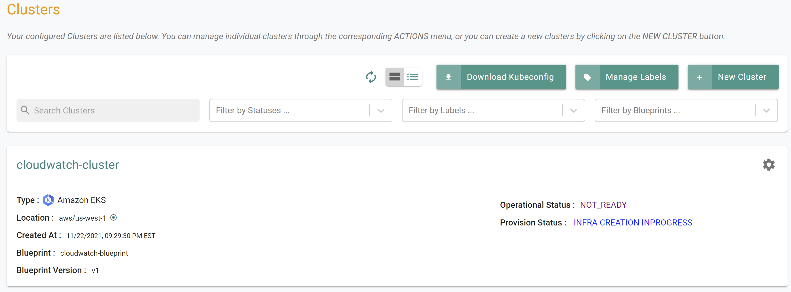
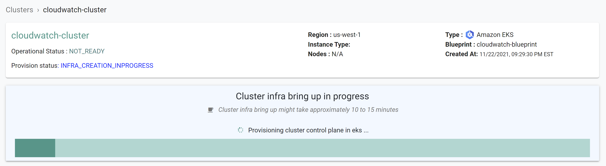
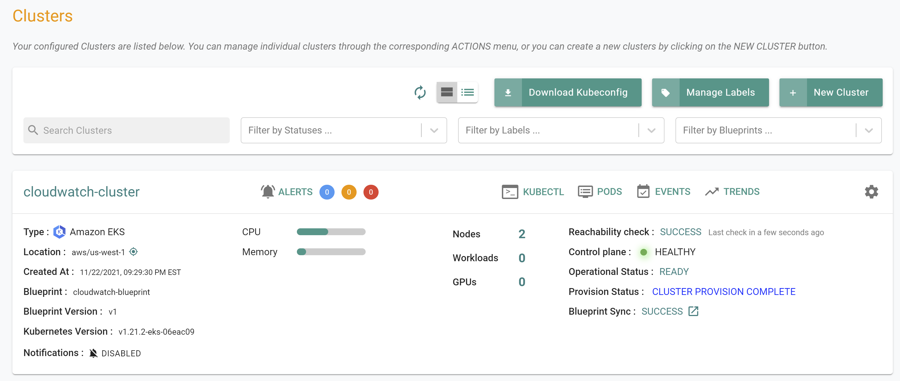
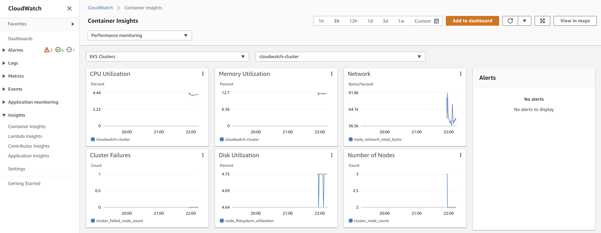

In this part of the self-paced exercise, you will provision an Amazon EKS cluster based on a declarative cluster specification
The “cloudwatch-eks-cluster.yaml” file contains the declarative specification for our Amazon EKS Cluster.
The following items may need to be updated/customized if you made changes to these or used alternate names.
region: “us-west-1”
kind: Cluster
metadata:
name: cloudwatch-cluster
project: defaultproject
spec:
blueprint: cloudwatch-blueprint
blueprintversion: v1
cloudprovider: aws-cloud-credential
cniprovider: aws-cni
type: eks
---
apiVersion: rafay.io/v1alpha5
kind: ClusterConfig
metadata:
name: cloudwatch-cluster
region: us-west-1
tags:
version: "1.21"
managedNodeGroups:
- name: ng-1
instanceType: t3.large
desiredCapacity: 2
iam:
withAddonPolicies:
albIngress: true
autoScaler: true
efs: true
cloudWatch: trueType the command below to provision the EKS cluster
rctl apply -f cloudwatch-eks-cluster.yamlIf there are no errors, you will be presented with a “Task ID” that you can use to check progress/status. Note that this step requires creation of infrastructure in your AWS account and can take ~20-30 minutes to complete.
{
"taskset_id": "empr728",
"operations": [
{
"operation": "NodegroupCreation",
"resource_name": "ng-1",
"status": "PROVISION_TASK_STATUS_PENDING"
},
{
"operation": "ClusterCreation",
"resource_name": "cloudwatch-cluster",
"status": "PROVISION_TASK_STATUS_PENDING"
}
],
"comments": "The status of the operations can be fetched using taskset_id",
"status": "PROVISION_TASKSET_STATUS_PENDING"
}

Once provisioning is complete, you should see a healthy cluster in the web console

Click on the kubectl link and type the following command
kubectl get nodesYou should see something like the following
NAME STATUS ROLES AGE VERSION
ip-192-168-36-4.us-west-1.compute.internal Ready <none> 22m v1.21.5-eks-bc4871b
ip-192-168-80-129.us-west-1.compute.internal Ready <none> 22m v1.21.5-eks-bc4871bNow, let us verify the CloudWatch agent resources are operational on the EKS cluster
Click on the kubectl link and type the following command
kubectl get pod -n amazon-cloudwatchYou should see something like the following
NAME READY STATUS RESTARTS AGE
cloudwatch-agent-gxdr8 1/1 Running 0 10m
cloudwatch-agent-zc8pw 1/1 Running 0 10mVerify that the agents are connected to CloudWatch and reporting data.

Congratulations! At this point, you have successfully configured and provisioned an Amazon EKS cluster with the Amazon CloudWatch agent in your AWS account using the RCTL CLI.